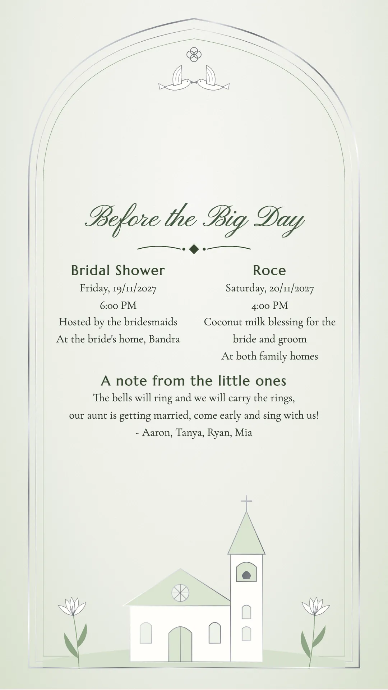
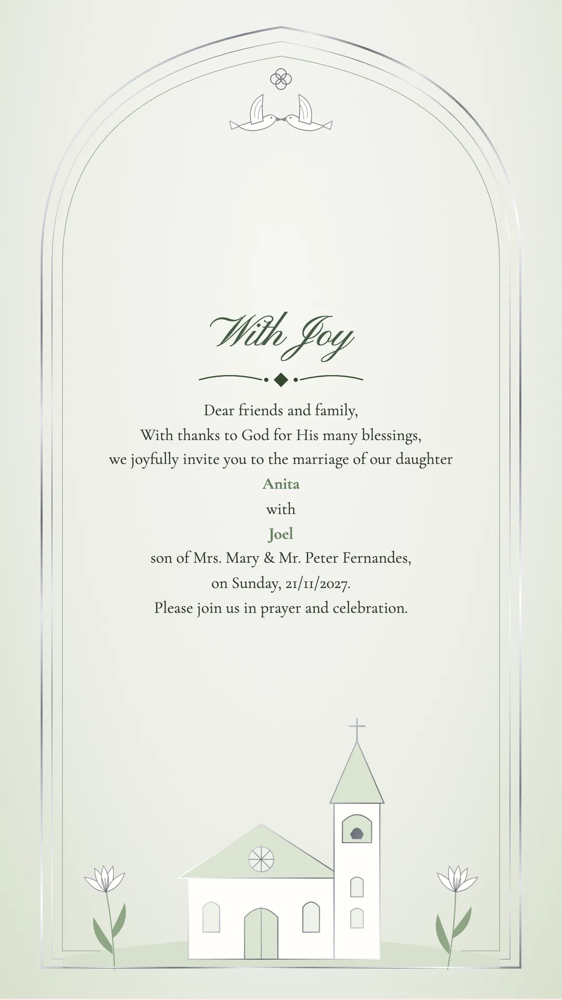
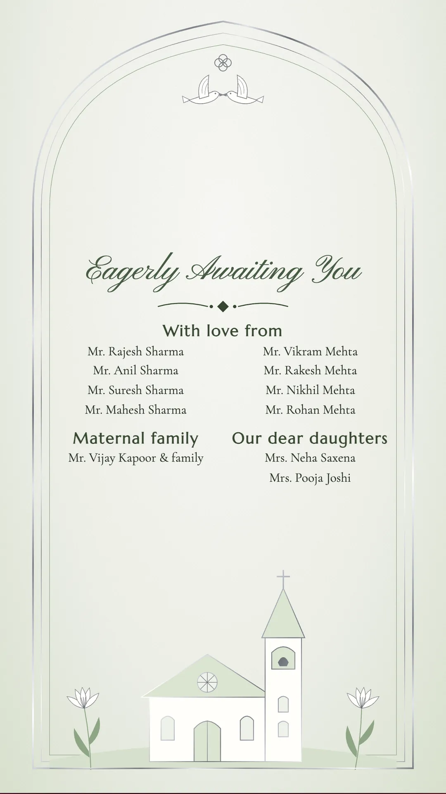
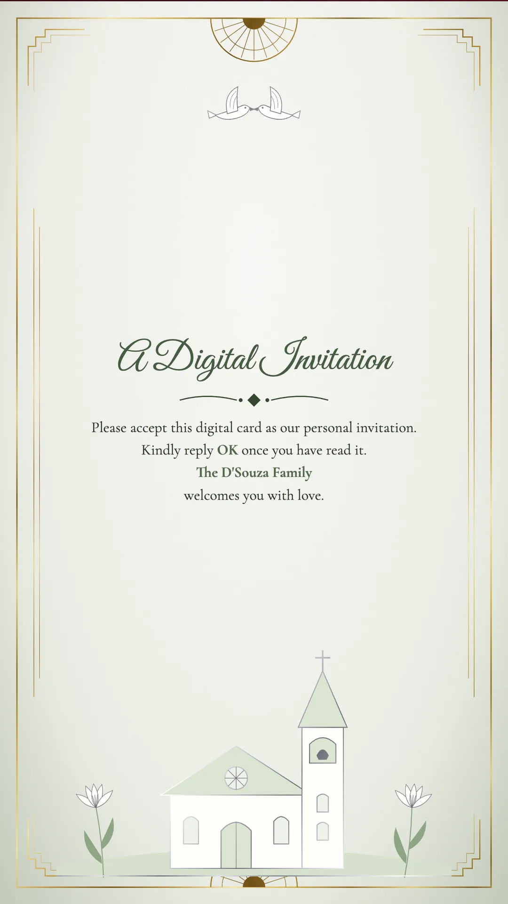

Designs › Wedding (Vivah) › White Chapel Silver Arch
White Chapel Silver Arch: English Christian wedding invitation

- Ceremony: Wedding (Vivah)
- Language: English
- God or sacred symbol: Christian (cross)
- Format: WhatsApp image (1080 x 1920 px) and 5 x 7 inch print PDF
- Pages: 6 (cover, functions, wedding-day programme, letter, family names, closing message)
About this design
The palest sage green, almost white at the centre, with a tall pointed gothic arch drawn in two silver lines and a thin sage line inside them. At the top of the arch, two white doves face each other beak to beak under a small silver quatrefoil. At the bottom stands a white chapel with a sage roof, a round window above the door and a bell tower topped with a cross, on a small green mound between two white lilies.
There is no Hindu invocation on this card. A cross in a ring sits where other cards put the Ganesha emblem, the title Holy Matrimony and the names are in sage green Pinyon Script, and the rest is in a dark grey-green serif.
The sample wording is written for a church wedding in Mumbai: the parents request the honour of your presence, the nuptial mass is at 4:00 pm at the church, and the reception, toast and first dance follow in the evening. The inner pages list a bridal shower and a roce, the coconut milk blessing many Goan and Mangalorean Catholic families hold the day before, then the wedding-day programme, a short letter, the families with the grandparents, bridesmaids and best man, and a closing message. Change the names, church and times to your own, and delete any page you do not need.
It suits Christian families in India and Indian couples marrying in a church abroad, for a daytime service or an evening one. The colours are soft and light, close to white wedding flowers. If you want a Malayali card without a cross, Kerala Kasavu Gold Border has no religious line, and Ivory Monogram Minimal makes a matching save-the-date.
All 6 pages
The cover is shown above. These are the other pages exactly as the card opens in the editor, with the sample family names.





Sample wording on this card
The cover opens in the editor with this text.
Holy Matrimony
Mrs. Grace & Mr. Thomas D'Souza request the honour of your presence at the marriage of their daughter
Anita
D/o Mrs. Grace & Mr. Thomas D'Souza
with
Joel
S/o Mrs. Mary & Mr. Peter Fernandes
Sunday, 21/11/2027
Nuptial Mass at 4:00 PM
St. Andrew's Church
Hill Road, Bandra West, Mumbai
RSVP
D'Souza & Fernandes Families
+91 98765 43210
The other five pages are Before the Big Day (bridal shower and roce), The Wedding Day (mass, reception, dinner and the reception venue), With Joy (the letter), With Love From (the families, grandparents and wedding party) and A Digital Invitation (the closing message).